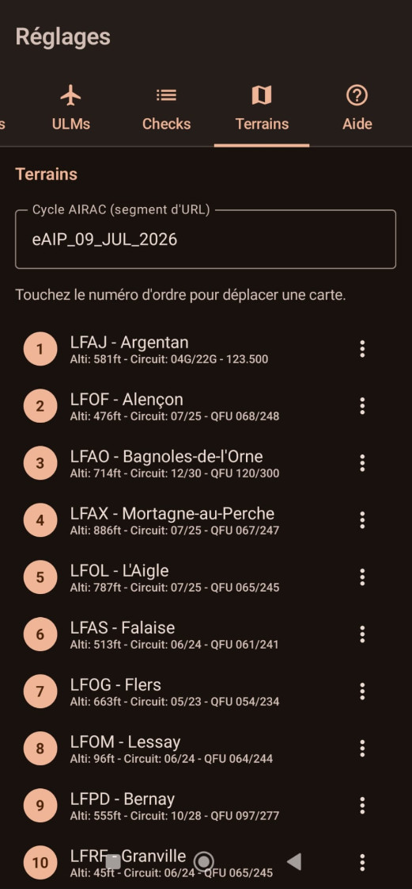
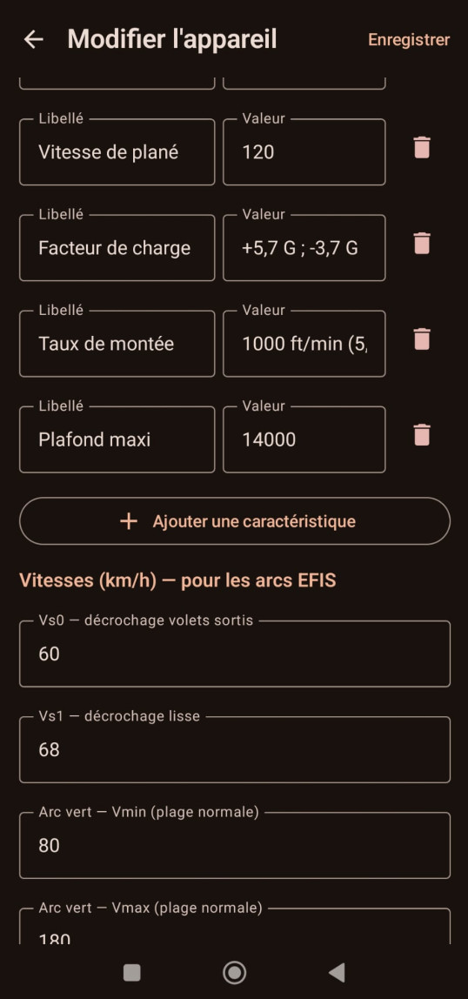

🗺
Cartes VAC
Terrains VAC · cycle AIRAC · téléchargement des PDF
Cycle AIRAC · segment d'URL
Terrain · OACI / nom / circuit


Possibilités
- Cycle AIRAC configurable (segment d'URL des cartes).
- Ajout / édition / suppression de terrains VAC.
Fiche terrain
- Code OACI et nom du terrain.
- Altitude et circuit.
- Coordonnées du terrain.
- Station météo (METAR/TAF) disponible ou non.
Téléchargement
- Télécharger les PDF VAC pour un usage hors-ligne.
- Vérifier les mises à jour des cartes.
Utilisation
- Les terrains renseignés alimentent l'instrument « Terrains proches ».
- … ainsi que le radar météo.